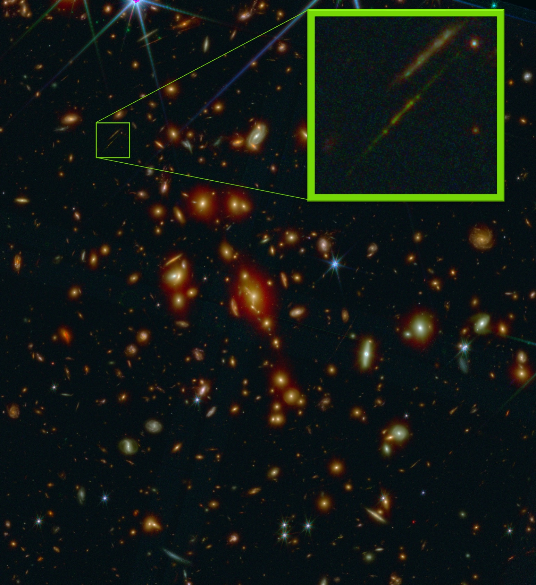

Our team is leading JWST programs in Cycles 1 and 2:
1433,
2282,
4412,
4246.
(Other JWST programs observing lensing clusters include the
ERO,
GLASS,
TEMPLATES,
UNCOVER,
CANUCS,
PEARLS,
MAGNIF,
and
GLIMPSE
)

The most highly magnified galaxy observed in the first billion years,
revealing parsec-scale star clusters and the individual star system Earendel.

The most highly magnified galaxy observed in the first 500 million years,
also revealing parsec-scale star clusters,
including some that likely persisted for over 13 billion years to remain as globular clusters in a modern-day galaxy.
One of the most distant galaxies ever seen by Hubble
(z = 10.17, observed 460 Myr after the Big Bang)
and the brightest (AB mag 25) known at this distance.
JWST revealed it to have two components as well as a companion galaxy, all likely destined to merge.